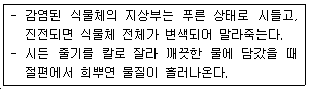
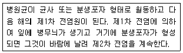
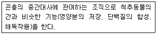
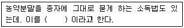
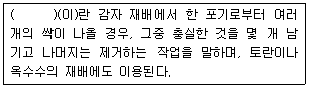
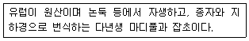
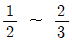
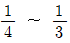

식물보호기사 (2016-03-06 기출문제)
1과목: 식물병리학
1. 잎녹병이 발생하는 기주와 중간기주의 연결이 올바른 것은?
- 곰솔 - 잔대
- 소나무 - 작약
- 전나무 - 황벽나무
- 잣나무 - 뱀고사리
(정답률: 72%)

2. 세포벽이 없는 원핵생물로 인공배지에 배양이 되지 않으며, 곤충에 매개되는 특성이 있고, 세균과 바이러스의 중간 형태로 알려진 식물병원 미생물은?
- 아메바
- 원생동물
- 프라이온
- 파이토플라스마
(정답률: 94%)
3. 수목에 발생하는 병과 중간기주의 연결이 옳지 않은 것은?
- 향나무 녹병 - 배나무
- 포플러 잎녹병 - 참취
- 잣나무 털녹병 - 송이풀
- 소나무 혹병 - 신갈나무
(정답률: 64%)
4. 감귤 궤양병에 대한 설명으로 옳지 않은 것은?
- 균류에 의한 병해이다.
- 귤굴나방에 의해 전염된다.
- 환기를 자주하여 방제할 수 있다.
- 과실의 색과 모양을 변화시켜 상품의 가치를 떨어뜨린다.
(정답률: 63%)
5. 곤충에 의해 주로 전염되는 병은?
- 벼 키다리병
- 맥류 오갈병
- 뽕나무 오갈병
- 배나무 붉은별무늬병
(정답률: 73%)
6. 오이 모자이크병의 방제에 가장 효과적인 것은?
- 윤작
- 종자소독
- 매개곤충 방제
- 합리적인 비배관리
(정답률: 71%)
7. 복숭아나무 잎오갈병에 대한 설명으로 옳은 것은?
- 병원균은 담자균문에 속한다.
- 균사가 뿌리의 상처로 침입한다.
- 주로 7월 이후 고온에서 발병한다.
- 발아 전 디티아논 수화제를 살포하면 방제할 수 있다.
(정답률: 70%)
8. 벚나무 빗자루병을 일으키는 병원체는?
- 세균
- 균류
- 바이러스
- 파이토플라스마
(정답률: 58%)
9. 매개충에 의해 병원이 경란전염하는 것은?
- 벼 오갈병
- 오이 모자이크병
- 벼 검은줄오갈병
- 감자 Y바이러스병
(정답률: 67%)
10. 다음 설명에 해당하는 병은?

- 고추역병
- 오이 흰가루병
- 토마토 풋마름병
- 사과 흰날개무늬병
(정답률: 87%)
11. 벼 도열병 방제에 가장 효과적인 비료는?
- 질소질 비료
- 규산질 비료
- 인산질 비료
- 칼륨질 비료
(정답률: 77%)
12. 불완전균류에 의한 병은?
- 배추 무름병
- 담배 모자이크병
- 오동나무 빗자루병
- 토마토 잎곰팡이병
(정답률: 56%)
13. 현미경을 이용하여 조직에 있는 병원균의 존재와 형태를 관찰하여 식물병을 진단하는 방법은?
- 육안적 진단
- 해부학적 진단
- 이화학적 진단
- 혈청학적 진단
(정답률: 70%)
14. 벼 줄무늬잎마름병에 대한 설명으로 옳지 않은 것은?
- 감염 매개곤충은 애멸구이다.
- 발병하면 뒤틀리면서 늘어지고 고사한다.
- 유령병이라고도 하며 병원균은 바이러스이다.
- 저항성 품종으로 추정, 일품, 농안, 봉광벼 등이 있다.
(정답률: 63%)
15. 다음 설명하는 병은?

- 벼 도열병
- 오이 역병
- 배추 뿌리혹병
- 오이 모잘록병
(정답률: 69%)
16. 채소류 잿빛곰팡이병의 방제로 옳지 않은 것은?
- 질소질 비료의 과용을 피한다.
- 꽃, 잎, 열매꼭지에서 상처를 주의한다.
- 밀식을 실시하여 작물의 웃자람을 막는다.
- 하우스 내의 습도를 높게 유지하지 않는다.
(정답률: 89%)
17. 가지과 풋마름병에 대한 설명으로 옳지 않은 것은?
- 여름철 평균 기온이 20℃이상인 경우 잘 발병한다.
- 비닐하우스 재배시 비료를 기준량보다 더 주어 방제한다.
- 피해가 심한 지역에서는 논으로 1년 정도 벼 재배를 실시한다.
- 일반적으로 토양에서 월동한 병원균이 뿌리의 상처로 침입하여 감염된다.
(정답률: 80%)
18. 가축이 섭취할 경우 유독한 독성 물질에 의해 중독 증상이 나타날 수 있는 것은?
- 벼 깨씨무늬병
- 보리 줄무늬병
- 맥류 흰가루병
- 밀 붉은곰팡이병
(정답률: 89%)
19. 식물병을 유발하는 세균에 대한 설명으로 옳지 않은 것은?
- 핵막이 있다.
- 원핵생물이다.
- 미토콘드리아가 없다.
- 유사분열을 하지 않는다.
(정답률: 54%)
20. 병원체의 크기가 종에 따라 다양하나 일반적으로 매우 작아 관찰을 위해서는 전자현미경을 사용해야만 하는 것은?
- 소나무 잎마름병
- 버즘나무 탄저병균
- 대추나무 빗자루병균
- 사과나무 검은별무늬병균
(정답률: 78%)
2과목: 농림해충학
21. 담배나방에 대한 설명으로 옳은 것은?
- 성충으로 월동한다.
- 유충이 주로 줄기를 가해한다.
- 천적으로는 쌀좀알벌, 예쁜가는배고치벌 등이 있다.
- 암컷은 낮에 활동하며 밤에는 잎 뒷면에 숨어 있다.
(정답률: 45%)
22. 진딧물의 생식방법에 대한 설명으로 옳은 것은?
- 양성생식에 의한 난생만을 한다.
- 양성생식에 의한 태생만을 한다.
- 단위생식에 의한 난생만을 한다.
- 단위생식에 의한 태생과 양성생식에 의한 난생을 모두 한다.
(정답률: 77%)
23. 다음에서 설명하는 곤충의 조직은?

- 전장
- 후장
- 지방체
- 카디아카제
(정답률: 73%)
24. 변태과정 없이 성충이 되는 곤축목은?
- 나비목
- 파리목
- 노린재목
- 딱정벌레목
(정답률: 71%)
25. 곤충의 호흡기관과 관계없는 것은?
- 기문
- 세로기관
- 모세기관
- 말피기관
(정답률: 82%)
26. 곤충의 내분비계에 대한 설명으로 옳지 않은 것은?
- 곤충의 유약호르몬은 알라타체에서 분비된다.
- 뇌호르몬의 분비는 음식물이나 환경의 영향을 받지 않는다.
- 탈피호르몬의 분비는 뇌호르몬에 의해서 자극을 받는다.
- 곤충의 탈피와 변태작용은 탈피호르몬과 유약호르몬의 상대적인 농도에 따라서 결정된다.
(정답률: 78%)
27. 다음 중 외래 침입해충이 아닌 것은?
- 사과면충
- 콩가루벌레
- 온실가루이
- 이세리아깍지벌레
(정답률: 64%)
28. 내분비계에 대한 설명으로 옳지 않은 것은?
- 유약호르몬은 알라타체에서 분비된다.
- 탈피호르몬은 앞가슴샘에서 분비된다.
- 유약호르몬은 성충기에 가까워짐에 따라 분비량이 늘어난다.
- 곤충에 다양한 생리작용에 관여하는 물질로서 적은 양이 분비되지만 그 영향은 매우 크다.
(정답률: 69%)
29. 곤충의 표피층에수분증발에 관여하는 조직은?
- 상표피
- 외표피
- 내표피
- 진표피
(정답률: 69%)
30. 날개가 발생된 후에 다시 탈피하며, 아성충기 단계를 거치는 것은?
- 하루살이
- 집게벌레
- 깍지벌레
- 귀뚜라미
(정답률: 69%)
31. 곤충의 천적으로 활용할 수 있는 바이러스가 아닌 것은?
- 과립 바이러스
- 베고모 바이러스
- 핵다각체 바이러스
- 세포질다각체 바이러스
(정답률: 69%)
32. 날개가 두 쌍이 있는 곤충(잠자리 등)의 가슴구조에 대한 설명으로 옳지 않은 것은?
- 가슴 각 마디에 1쌍씩의 다리가 있다.
- 앞가슴과 가운데 가슴에 1쌍씩의 날개가 있다.
- 가슴 안에는 날개와 다리를 움직이는 근육이 있다.
- 가슴은 앞가슴, 가운데가슴, 뒷가슴의 3마디로 구분된다.
(정답률: 76%)
33. 해충의 가해 습성으로 옳지 않은 것은?
- 혹명나방 : 유충이 잎을 가해한다.
- 박쥐나방 : 유충이 열매를 가해한다.
- 먹노린재 : 약충이 줄기를 가해한다.
- 이화명나방 : 유충이 줄기 속을 파먹는다.
(정답률: 58%)
34. 유충과 성충이 모두 잎을 가해하는 해충은?
- 독나방
- 솔잎혹파리
- 오리나무잎벌레
- 꼬마버들재주나방
(정답률: 78%)
35. 밀도의족적 치사(밀도종속적 사망)에 대한 설명으로 옳은 것은?
- 사망률은 개체군 내 밀도 크기에 비례한다.
- 탄생율은 개체군 내 밀도 크기에 비례한다.
- 사망률은 개체군 내 밀도 크기에 반비례한다.
- 탄생율은 개체군 내 밀도 크기에 반비례한다.
(정답률: 72%)
36. 솔잎혹파리에 대한 분류 및 형태적 설명으로 옳지 않은 것은?
- 파리목 혹파리과에 속한다.
- 성충의 크기는 2mm 내외이다.
- 알은 긴타원형이며 담황색이다.
- 학명은 Spodoptera exigua이다.
(정답률: 56%)
37. 곤충의 주광성을 이용하여 해충을 조사하는 방법은?
- 유아등 조사
- 공중 포충망 조사
- 페로몬 트랩 조사
- 말레이즈 트랩 조사
(정답률: 83%)
38. 기계유 유제의 작용 특성에 대한 설명으로 옳은 것은?
- 식독제로서 위에서 소화중독이 되어 치사시킨다.
- 직접 접촉제로서 곤충 체표에 피막을 형성하여 기관을 막아 질식사 시킨다.
- 침투성 살충제로서 작용점인 신경계를 이상 자극하여 저해작용을 한다.
- 침투성 살충제로서 원형질에 도달하여 에너지생성계의 효소에 저해작용을 한다.
(정답률: 78%)
39. 유충이 몇 개의 벼 잎을 끌어 모아 철하고, 그 속에 숨어 있다가 해가 진 후에 나와 벼 잎을 가해하는 해충은?
- 벼애나방
- 조명나방
- 벼잎벌레
- 줄점팔랑나비
(정답률: 56%)
40. 곤충의 고시류와 신시류의 분류 기준으로 옳은 것은?
- 변태의 정도에 따른 분류이다.
- 날개의 유무에 따른 분류이다.
- 번데기의 부속지 움직임 유무에 따른 분류이다.
- 날개를 완전히 접을 수 있는지에 따른 분류이다.
(정답률: 79%)
3과목: 재배학원론
41. 종자(종구) 파종시에 복토를 가장 깊게 해야 하는 작물은?
- 소립 채소류
- 콩
- 감자
- 튤립
(정답률: 71%)
42. 다음 중 ( )에 알맞은 내용은?

- 침지소독
- 온탕소독
- 분의소독
- 건열소독
(정답률: 70%)
43. 작물의 도복대책으로 거리가 먼 것은?
- 질소 중심의 시비를 한다.
- 병충해를 잘 방제해야 한다.
- 키가 작고 줄기가 튼튼한 품종을 선택한다.
- 맥류는 복토를 깊게 하면 도복이 경감된다.
(정답률: 73%)
44. 버널리제이션의 농업적 이용으로 볼 수 없는 것은?
- 감광형 벼의 조기재배
- 딸기의 촉성재배
- 맥류 육종의 세대단축
- 추파맥류의 대파
(정답률: 51%)
45. 감자는 작물체의 어느 부분이 비대된 것인가?
- 측근
- 직근
- 지하줄기
- 종자근
(정답률: 75%)
46. 다음 중 ( )에 알맞은 내용은?

- 휘기
- 제얼
- 절상
- 적엽
(정답률: 67%)
47. 토양과 식물체 및 대기 간의 수분이동에서 수분 포텐셜을 가장 높은 곳에서 가장 낮은 곳으로 바르게 표시한 것은?
- 대기 → 식물체 → 토양
- 식물체 → 대기 → 토양
- 대기 → 토양 → 식물체
- 토양 → 식물체 → 대기
(정답률: 73%)
48. 노포크(Norfolk)식 윤작법의 예로 가장 적합한 것은?
- 콩 → 밀 → 클로버
- 옥수수 → 클로버 → 보리 → 밀
- 밀 → 옥수수 → 순무
- 순무 → 보리 → 클로버 → 밀
(정답률: 66%)
49. 목초의 하고현상을 일으키는 유인은?
- 고온
- 습윤
- 단일
- 저온
(정답률: 74%)
50. 연작의 해가 비교적 커서 5년 이상의 휴작이 필요한 작물로만 나열된 것은?
- 토마토, 양배추, 담배
- 참외, 시금치, 생강
- 호박, 땅콩, 오이
- 수박, 가지, 고추
(정답률: 70%)
51. 박과채소류 접목육묘의 장점으로 틀린 것은?
- 흡비력이 강해진다
- 토양전염성병의 발생이 적어진다.
- 불량 환경에 대한 내성이 증대된다.
- 질소 흡수가 줄어들어 당도가 증가한다.
(정답률: 73%)
52. 토양공기가 작물의 생육에 미치는 영향으로 옳은 것은?
- 토양 중의 이산화탄소 농도가 높아지면 토양이 산성화 되고 무기염류의 흡수가 저해된다.
- 토양용기량이 증가하면 환원성 유해물질이 생성되어 뿌리가 상한다.
- 토양용기량이 증가하면 산소의 농도가 감소한다.
- 미숙유기물의 시용은 토양 내 산소의 농도를 높여 흡수를 촉진시킨다.
(정답률: 63%)
53. 작물의 동상해에 대한 응급대책이 아닌 것은?
- 저녁에 충분히 관개한다.
- 수증기가 많이 함유된 연기를 발산시킨다.
- 낡은 타이어, 중유 등을 연소시킨다.
- 이랑을 낮추어 뿌림골을 낮게 한다.
(정답률: 67%)
54. 종자의 발아조사에서 총 발아된 종자수를 총 조사일수로 나눈 값은?
- 평균발아일수
- 평균발아속도
- 발아속도지수
- 발아세
(정답률: 50%)
55. 다음 중 밭토양에 부식이 크게 부족할 때를 이를 개량하기 위한 방법으로 가장 적합한 것은?
- 관수를 자주 한다.
- 깊이갈이를 매년 한다.
- 퇴비, 구비, 생고 등 유기물을 충분히 공급한다.
- 비료의 3요소인 N, P, K를 금비로 매년 충분히 시비한다.
(정답률: 72%)
56. 일장형이 단일식물에 해당하는 작물은?
- 시금치
- 들깨
- 상추
- 아주까리
(정답률: 49%)
57. 작물의 내동성에 대한 설명으로 옳은 것은?
- 지방함량이 높으면 내동성이 낮아진다.
- 당분함량이 많으면 내동성이 증대된다.
- 원형질의 수분투과성이 크면 내동성이 낮아진다.
- 세포의 수분함량이 높아서 자유수가 많아지면 내동성이 증대된다.
(정답률: 68%)
58. 안토시안의 생성을 조장하는 조건은?
- 고온
- 황색광
- 자색광
- 녹생광
(정답률: 72%)
59. 내건성이 강한 작물의 일반적 특성으로 옳은 것은?
- 세포가 커서 수분이 감소해도 원형질의 변형이 작다.
- 원형질의 점성이 낮아야 한다.
- 세포액의 삼투압이 높아야 한다.
- 원형질막의 수분투과성이 작아야 한다.
(정답률: 59%)
60. 다음 중 내습성이 가장 강한 작물은?
- 옥수수
- 고구마
- 양파
- 고추
(정답률: 65%)
4과목: 농약학
61. 식물생장조절제에 대한 설명으로 틀린 것은?
- 식물의 다양한 생리현상에 영향을 미친다.
- 농작물의 생육을 촉진하거나 또는 억제시킨다.
- 지베렐린산은 딸기, 토마토의 숙기억제에 관여한다.
- 나드분제는 옥신계로 카네이션의 발근을 촉진한다.
(정답률: 73%)
62. 하우스 내의 시설재배에 있어서 병충해 방제를 목적으로 하여 개발된 것으로 미분쇄로 된 분제인 플로우더스트(FD) 제형의 평균 입경은 얼마 정도인가?
- 2㎛
- 10㎛
- 20㎛
- 40㎛
(정답률: 60%)
63. 약해에 대한 설명으로 옳지 않은 것은?
- 약해란 농약에 의해서 식물의 정상적인 생육을 저해하는 것이다.
- 약해라고 해서 전부 작물의 수확에 영향을 끼치는 것은 아니고, 환경조건에 따라 회복되는 일시적 약해도 있다.
- 살충제의 약해발생은 유기인계 계통이 많다.
- 만성적인 약해는 약제를 살포한지 1주일 이내에 나타난다.
(정답률: 74%)
64. 디멘존 45% 유제 50mL(비중 1.0)를 1200배액으로 희석하여 살포하려 할 때 소요되는 물의 양은?
- 24L
- 27L
- 60L
- 67L
(정답률: 59%)
65. 각종 응애류를 방제하는데 적합하며 특히 소나무 재선충에 대해 살선충 활성을 보이는 약제는?
- 캡탄(Captan)
- 밀베멕틴(Milbemectin)
- 메토밀(Methomyl)
- 풀루아지남(Fluazinam)
(정답률: 58%)
66. 건조 상태에서 안정하지만 공기 중의 습기에서는 서서히 반응하여 창고의 곡물, 사료, 잎담배 해충의 방제를 위해 주로 사용되는 훈증제는?
- 이황화탄소
- 인화알루미늄
- 클로로피크린
- 메틸브로마이드
(정답률: 42%)
67. 만코제브 수화제는 어느 계통의 농약인가?
- 유기유황계
- 카바메이트계
- 유기염소계
- 피레스로이드계
(정답률: 49%)
68. 배추의 벼룩잎벌레에 주로 적용하는 약제는?
- 다이아지논
- 델타메트린
- 디메토에이트
- 디플루벤주론
(정답률: 51%)
69. 식물생장조절제에 속하는 것은?
- 6-BA
- EPN
- Diazinon
- Phenthoate
(정답률: 68%)
70. 농약의 급성독성에 대한 설명으로 틀린 것은?
- 농약을 단 1회 투여하여 생물집단에 대한 독성을 평가하는 것이다.
- 독성정도는 생물집단의 반수가 치사되는 양으로 평가한다.
- 농약이 살포된 농산물을 섭취하는 소비자에 대한 독성평가를 위한 것이다.
- 농약관리법에서 급성독성 정도에 따른 구분은 I - IV 급 까지이다.
(정답률: 65%)
71. 60Kg 쌀에 살충제 이피엔 50% 유제를 8ppm 이 되도록 처리하려고 할 때의 소요 약량은 얼마인가? (단, 약제의 비중은 1.07이다.)
- 0.5mL
- 0.7mL
- 0.9mL
- 1.2mL
(정답률: 45%)
72. 해충의 주화성을 이용하는 약제는?
- 해독제
- 훈연제
- 유인제
- 생물농약
(정답률: 79%)
73. 식물 생육단계 중 약해의 염려가 가장 적은 시기는?
- 휴면기
- 영양생장기
- 생식생장기
- 개화기
(정답률: 79%)
74. 농약의 사용 목적에 따른 분류로서 옳지 않은 것은?
- 접촉독제
- 종자 소독제
- 제초제
- 유탁제
(정답률: 71%)
75. 농약 혼용 시 준수하여야 할 사항이 아닌 것은?
- 표준 희석배수를 준수한다.
- 혼용한 살포액은 되도록 즉시 살포한다.
- 가능하면 여러 종류의 농약을 혼용한다.
- 혼용 시 침전물 생성이 있는 경우 사용하지 않는다.
(정답률: 83%)
76. 다음 중 유기인제의 활성화와 관계가 가장 적은 것은?
- parathion → paraoxon
- cytochromeoxidase
- 포유동물 간장
- 곤충의 중장
(정답률: 39%)
77. 식물호르몬 작용 저해제와 비슷한 작용특성을 보이기 때문에 식물이 고사하는 것보다 기형인 경우가 많은 제초제의 작용기작은?
- 단백질 합성저해
- 광합성 저해
- 호흡 저해
- 아미노산 합성저해
(정답률: 59%)
78. 분말은 물에 잘 젖지 않고, 부드럽고 미끈한 촉감을 주며, 액성은 알칼리성을 보이나 안정하므로 각종 농약의 분제 제조용으로 많이 사용되는 증량제는?
- 벤토나이트
- 탈크
- 필로필라이트
- 카올린
(정답률: 55%)
79. 피레드린(Pyrethrin) 성분을 함유하는 천영살충용 식물은?
- 송지
- 테리스
- 제충국
- 연초
(정답률: 84%)
80. 다음 중 가장 오래 전부터 제조되어 사용되었던 농약은?
- Lime sulfur
- Schradan
- Endosulfan
- Oxadixyl
(정답률: 62%)
5과목: 잡초방제학
81. 주로 종자로만 번식하는 잡초는?
- 올미, 벗풀
- 피, 물달개비
- 가래, 쇠털골
- 올방개, 너도방동사니
(정답률: 56%)
82. 잡초종자의 발아 습성으로 옳지 않은 것은?
- 발아의 주기성
- 발아의 계절성
- 발아의 불연속성
- 발아의 준동시성
(정답률: 59%)
83. 작물과 잡초의 양분 경합이 가장 큰 것은?
- 질소
- 인산
- 칼륨
- 석회
(정답률: 82%)
84. 왕우렁이를 이용한 잡초 방제법에 대한 설명으로 옳지 않은 것은?
- 잡초방제 효과를 높이기 위해 물을 얕게 댄다.
- 이앙 전 평탄하게 정지작업을 잘해야 효과가 크다.
- 왕우렁이 방사 시기는 벼이앙 후 5-7일이 효과적이다.
- 수면과 수면 아래의 수초를 먹는 먹이 습성을 이용한 것이다.
(정답률: 67%)
85. 잡초에 대한 작물의 경합력을 높이기 위한 방법으로 옳지 않은 것은?
- 가급적 밀식재배를 한다.
- 춘파작물과 추파작물을 윤작한다.
- 분지수가 많고 엽면적지수가 큰 품종을 선택한다.
- 초관형성이 늦은 만생종 품종을 선택하여 재배한다.
(정답률: 66%)
86. 피복작물 재배에 따른 효과가 아닌 것은?
- 토양침식 방지
- 잡초경합력 증대
- 병해충 서식억제
- 토양비옥도 증대
(정답률: 41%)
87. 다음 설명에 해당하는 잡초는?

- 돌피
- 애기수영
- 까치수염
- 올챙이고랭이
(정답률: 56%)
88. 작물과 잡초와의 경합으로 인한 작물손실의 영향이 비교적 적지만 치열한 경합을 벌이는 시기는?
- 잡초경합한계기간
- 잡초경합허용기간
- 작물경합한계기간
- 작물경합허용기간
(정답률: 58%)
89. 올방개 방제에 가장 효과적인 제초제는?
- 마세트가 혼합된 제초제
- 모리네이트가 혼합된 제초제
- 벤퓨러세이트가 혼합된 제초제
- 에스프로카브가 홉합된 제초제
(정답률: 69%)
90. 1년생 광엽잡초로만 짝지어진 것은?
- 피, 가래
- 올미, 자귀풀
- 벗풀, 매자기
- 여뀌, 물달개비
(정답률: 56%)
91. 아릴옥실페녹시 프로피오닉산계 제초제에 대한 설명으로 옳지 않은 것은?
- 지질생합성을 저해한다.
- 토양 속에서는 쉽게 분해된다.
- 화본과 잡초는 내성을 보인다.
- 최상의 효과를 위해서는 보조제나 첨가제의 혼합이 필요하다.
(정답률: 45%)
92. 잡초 발생이 가장 많은 벼재배 방법은?
- 건답직파
- 담수직파
- 중묘 기계이앙
- 성묘 기계이앙
(정답률: 75%)
93. 월동작물 재배지에서 주로 발생하는 잡초로만 짝지어진 것은?
- 여뀌, 명아주
- 바랭이, 쇠비름
- 뚝새풀, 벼룩나물
- 돌피, 참방동사니
(정답률: 64%)
94. 제초제의 일반적인 구비 조건으로 가장 거리가 먼 것은?
- 가격이 적절해야 한다.
- 사용 및 보관이 편리 하여야 한다.
- 잔류기간이 길어 약효 지속성이 높아야 한다.
- 사람 및 동물에 대한 안전성이 높아야 한다.
(정답률: 81%)
95. 잡초와의 경합이 가장 많은 기간은?
- 생육 중기부터 후기
- 개화 후부터 성숙기 전반
- 작물의 전체 생육기간의

기간 - 작물의 전체 생육기간의

기간
(정답률: 77%)
96. 유효성분 5%인 입제 제초제를 1ha당 1kg(유효성분량)을 처리하고자 할 때 필요한 양은?
- 2kg
- 10kg
- 20kg
- 40kg
(정답률: 59%)
97. 상호대립억제작용(Allelopathy)에 대한 설명으로 옳은 것은?
- 제초제를 오래 사용한 잡초에 대한 내성을 나타내는 것이다.
- 다른 종의 생육을 억제하는 주된 기작은 주로 차광에 의해 일어난다.
- 잡초가 다른 작물의 생육을 억제하는 것은 아니며 잡초 간에만 일어나는 현상이다.
- 죽은 식물 조직에서 나오는 물질에 의해서도 상호대립억제작용 현상이 일어날 수 있다.
(정답률: 76%)
98. 잡초가 발아하여 지표면 위로 출현하는 과정에 관여하는 요인과 가장 관련이 적은 것은?
- 토양심도
- 토양강도
- 토양수분
- 토양온도
(정답률: 69%)
99. 부유잡초에 해당하는 것으로만 짝지어진 것은?
- 벗풀, 생이가래
- 올미, 좀개구리밥
- 벗풀, 올챙이고랭이
- 생이가래, 좀개구리밥
(정답률: 77%)
100. '피'의 식물 분류학 위치로 옳지 않은 것은?
- 피자식물
- 벼과식물
- 쌍자엽식물
- 유관속식물
(정답률: 67%)